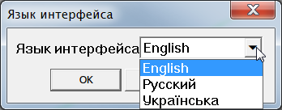

Описание
Плагин для Sketchup® 2014 Pro или выше. Представляет собой библиотеку для использования другими плагинами.
Использование
Использовать можно как отдельный плагин путем подключения только модулей так и отдельные файлы или часть исходного кода для разработки собственных плагинов. Меню доступа к инструментам находится по пути:
Tools ► Yorik Lib
Локализация
Для всех плагинов и инструментов автора (Yorik Tools) будет использован единый язык (локализация). Смена языка реализована с помощью LangHandler. Выбрать можно в соответствующем меню:
Tools ► Yorik Lib ► Язык интерфейса

Примечние. При вызове справки плагина из состава Yorik Tools будет показана страница на языке, который в данный момент активен в программе. А при ее отсутствии - на языке по умолчанию (в данном случае English).
Установка
Плагин работает только в Sketchup® 2014 Pro или выше. Установите новую версию программы перед использованием плагина. Installing Ruby Plugins in Sketchup.
Для разработчиков
Исходный код плагина на GitHub. Документация (на англ. языке) на rubydoc.info.